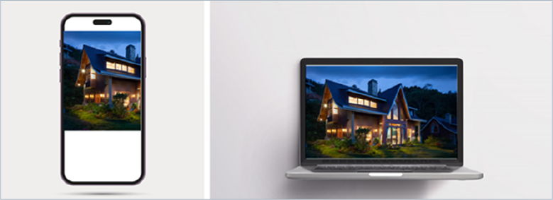
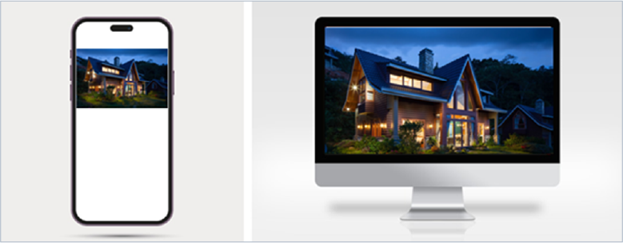
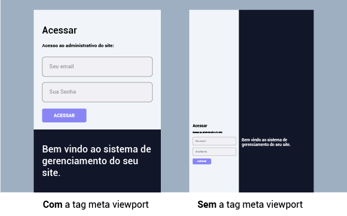

Quando se trata do conceito de sites responsives, a grande modificação será nos arquivos CSS (cascading style sheets) do seu site ou sistema. Mesmo em sites responsives, o HTML de uma página continua com seu objetivo original, que é “marcar”, indicar, o que é o quê em cada interface.
Porém, há uma pequena atualização obrigatória que se deve fazer em seu HTML para que um site apareça corretamente em qualquer tamanho de tela. Então, neste material, será abordada a meta tag viewport, que é essencial para que um site se ajuste corretamente em diferentes tipos e tamanhos de tela.
A responsividade é um conceito central no desenvolvimento web, garantindo que uma interface se adapte a diferentes tamanhos de tela e dispositivos. Embora o HTML mantenha sua função primordial de estruturar e organizar os elementos da página, é no CSS que ocorrem as maiores adaptações visuais para tornar o site verdadeiramente responsivo. Neste material, serão explorados o conceito de responsividade, suas principais aplicações e as técnicas essenciais, como o uso da meta tag viewport, que é fundamental para garantir uma exibição otimizada e adaptável em qualquer dispositivo.
O conceito de responsive é tornar algo adaptável, acessível ou apropriado para todos. Quando esse conceito é direcionado para a programação na web, mais especificamente em desenvolvimento de interfaces, refere-se a tornar a interface de um sistema ou site adaptável a qualquer resolução (tamanho) de tela.
É importante frisar esse conceito, pois responsive não tem relação com criar uma interface amigável para dispositivos móveis, e sim tornar a interface funcional a qualquer tipo de tela. A cada ano, fabricantes de celulares lançam novos modelos com resoluções de tela diferentes. Porém, todos os anos também surgem computadores e televisões (smart TV) com telas distintas.
Só é possível chamar sua interface de responsive se ela se ajusta a todas essas resoluções. Alguns chamam esse conceito de design responsive.
Para adotar o conceito de responsive, é preciso primeiro pensar no design da sua interface e em como ele será visualmente adaptada a diferentes tamanhos de tela.
Um conceito muito utilizado atualmente é o mobile first, que basicamente busca desenvolver uma interface pensando primeiro nos dispositivos móveis. Ou seja, o design e o desenvolvimento das funcionalidades são pensados para dispositivos com telas menores e depois adaptados para os computadores ou dispositivos de telas maiores, como televisores smart.
Design responsive
Fonte: Freepik (c2010-2024)
A imagem mostra a ilustração de vários dispositivos, como computador, celular e tablet. Dentro de cada dispositivo está o leiaute, as marcações dos blocos de conteúdo se adaptando na tela de cada dispositivo.
Basicamente, para se ter uma interface responsive, são utilizadas técnicas avançadas da linguagem de estilo chamada CSS, por exemplo, utilizando como unidade de medida as porcentagens (%) em vez de pixels (px), utilizando as funções de media query para criar adaptações específicas em determinadas resoluções, entre outras.
Então, para garantir que uma imagem se ajuste ao tamanho da tela, é preciso especificar o tamanho dela utilizando como unidade de medida o percentual (%), porém é preciso respeitar o tamanho original da imagem para que ela não perca qualidade. Qualquer imagem perde qualidade ao ser redimensionada, no entanto essa queda na qualidade só é percebida ao aumentar a imagem, pois, ao reduzi-la, geralmente a mudança da imagem é quase imperceptível.
Suponha que você deseja colocar uma imagem em uma página HTML cuja largura original corresponde a 1.800 px. Em uma tela grande, a imagem será exibida inteira, já em telas com largura menor que 1.800 px, a imagem será cortada.

Imagem de tamanho fixo
Fonte: Senac EAD (2024)
A ilustração mostra, lado a lado, um celular e um notebook. A imagem no notebook aparece inteira, já na tela do dispositivo móvel aparece cortada.
Observe, na figura, que ao visualizar uma imagem na tela de um dispositivo móvel, ela fica “cortada” porque a largura da tela é menor que a largura total da imagem. Agora, veja na próxima figura que o inverso também pode ocorrer: ao abrir a imagem em uma tela maior que, neste exemplo, 1.800 px, a imagem não cobrirá a largura total da tela.
Imagem de tamanho fixo em tela grande
Fonte: Senac EAD (2024)
A ilustração mostra, lado a lado, um monitor e um notebook. A imagem no notebook aparece inteira, já na tela maior ela não cobre a largura total da tela.
Uma técnica bem comum para resolver isso é manipular a largura da imagem usando CSS. Veja um exemplo:
.imagem{ width:100%}
Isso fará com que a imagem mantenha a largura total em relação ao elemento pai dela. Veja na figura como ficaria:

Imagem de tamanho proporcional
Fonte: Senac EAD (2024)
A ilustração mostra, lado a lado, um celular e um monitor. A imagem no monitor aparece inteira, já na tela do dispositivo móvel ela se ajusta conforme a largura da tela.
Repare, nessa figura, que a imagem aumentou para cobrir totalmente a largura da tela do monitor, porém, ao abrir em um dispositivo móvel, a imagem reduziu sua largura para se ajustar à tela menor.
Também é possível citar como principais características de um design responsivo:
Clique ou toque para visualizar o conteúdo.
Utiliza layouts flexíveis que se ajustam dinamicamente ao tamanho da tela do dispositivo. Elementos como grades e blocos de conteúdo são dimensionados proporcionalmente.
Utiliza media queries em CSS para aplicar estilos específicos com base nas características da tela, como largura, altura, resolução, orientação e outros. Isso permite que o design responda a diferentes condições de exibição.
Implementa técnicas, como o atributo max-width em CSS, para garantir que as imagens não ultrapassem os limites do contêiner e se ajustem às diferentes telas.
Utiliza unidades de medida relativas, como porcentagens ou “em”, para garantir que o texto se ajuste de acordo com o tamanho da tela e a preferência do usuário.
Adapta a navegação para torná-la acessível em telas menores, como menus de navegação responsivos ou reorganização de elementos de navegação.
Prioriza o desempenho, carregando apenas os recursos necessários para a exibição em dispositivos específicos. Isso pode incluir o carregamento de versões menores de imagens ou o carregamento assíncrono de scripts.
Realiza testes em diversos dispositivos e navegadores para garantir uma experiência consistente e de qualidade para todos os usuários.
Para implementar uma interface responsive, além de pensar no design adaptável, é preciso utilizar técnicas avançadas de CSS. Porém, há um pequeno detalhe em seu HTML que, se não implementado, fará com que sua interface tenha comportamentos inesperados e não proporcionará uma correta experiência para o usuário.
Qualquer site responsive precisa utilizar a tag meta com o name de viewport. A tag <meta viewport> é uma meta tag em HTML que controla a maneira como a página é exibida em dispositivos móveis. Ela desempenha um papel crucial no design responsivo, ajudando a otimizar a apresentação e o layout de uma página web em telas de diferentes tamanhos, como smartphones e tablets.
A tag <meta viewport> geralmente é usada dentro da seção <head> do HTML e pode conter vários atributos para configurar as propriedades de visualização. Um dos atributos mais comuns é o width, que define a largura inicial da área de exibição. Aqui está um exemplo típico:
<meta name="viewport" content="width=device-width, initial-scale=1.0" />
Além destes, existem outros atributos que podem ser usados na tag <meta viewport> para ajustar o comportamento de visualização, como minimum-scale, maximum-scale, user-scalable, entre outros.
Veja um exemplo com outros atributos:
<meta name="viewport" content="width=device-width, initial-scale=1.0, minimum-scale=1.0, maximum-scale=2.0, user-scalable=yes" />
Esses ajustes ajudam a controlar como a página é exibida em dispositivos móveis, proporcionando uma experiência de usuário mais consistente e adaptável. O uso apropriado da tag <meta viewport> é essencial para garantir que o design responsivo seja eficaz e que a página seja visualizada corretamente em uma variedade de dispositivos.
Mesmo que sejam utilizadas técnicas de CSS para tornar-se uma página responsive, se a página não tiver a tag meta viewport, a visualização em dispositivos móveis não será otimizada. Veja um exemplo na figura:

Meta viewport
Fonte: Senac EAD (2024)
A imagem mostra duas páginas lado a lado, da visão de um celular, com um painel de acesso com os campos de e-mail e senha. Na página que contém a tag viewport, os campos são ajustados ao tamanho da tela, a outra não.
Contudo, não há muitas opções ou variedades de utilização da tag meta viewport. Na maioria dos casos, apenas sua utilização básica, conforme o primeiro exemplo, já é suficiente para que sua página HTML esteja apta a aceitar os comandos responsives que implementará, porém a utilização dessa tag é obrigatória para o desenvolvimento de qualquer interface web.
A aplicabilidade de interfaces responsivas é um conceito crucial no desenvolvimento web e no design de interfaces, tendo um impacto significativo na forma como se cria e se interage com sites e aplicações web em uma variedade de dispositivos. Aqui estão alguns tópicos importantes sobre a aplicabilidade das interfaces responsivas:
Clique ou toque para visualizar o conteúdo.
Com uma vasta gama de dispositivos com acesso à internet disponíveis no mercado, incluindo smartphones, tablets, laptops e desktops com diferentes tamanhos de tela e resoluções, as interfaces responsivas garantem que o conteúdo seja acessível e legível em todos esses dispositivos, proporcionando uma experiência de usuário coesa.
As interfaces responsivas adaptam-se automaticamente ao tamanho da tela do dispositivo utilizado, melhorando significativamente a experiência do usuário. Textos, imagens e outros elementos do site são escalados e reorganizados para garantir que o conteúdo seja fácil de ler e navegar, independentemente do dispositivo.
Interfaces responsivas são frequentemente projetadas considerando também a otimização do desempenho, como a redução do tempo de carregamento das páginas. Isso é particularmente importante para usuários em conexões lentas ou instáveis, garantindo que o site seja acessível mesmo em condições de rede não ideais.
Do ponto de vista do desenvolvimento, adotar uma abordagem responsiva desde o início pode ser mais econômico do que criar múltiplas versões de um site. Além disso, oferecer uma boa experiência de usuário em todos os dispositivos pode aumentar a conversão e retenção de usuários, impactando positivamente o retorno sobre o investimento.
Atualmente, pode-se dizer que implementar uma interface responsive é indispensável e até mesmo obrigatório para qualquer site ou sistema web que visa propiciar uma navegação funcional, amigável e intuitiva para seus usuários.
Neste material, você viu que o conceito de responsividade é essencial para garantir que uma interface web se ajuste de forma eficaz a diferentes dispositivos e tamanhos de tela. Por meio das modificações no CSS e da correta utilização da meta tag viewport no HTML, é possível construir interfaces adaptáveis e funcionais, mantendo a estrutura original do conteúdo e proporcionando uma melhor experiência ao usuário. Dominar essas técnicas é fundamental para o desenvolvimento de sites e sistemas modernos, alinhados às demandas de acessibilidade e praticidade no ambiente digital.